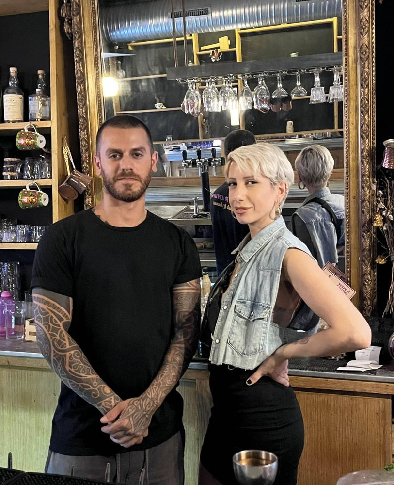
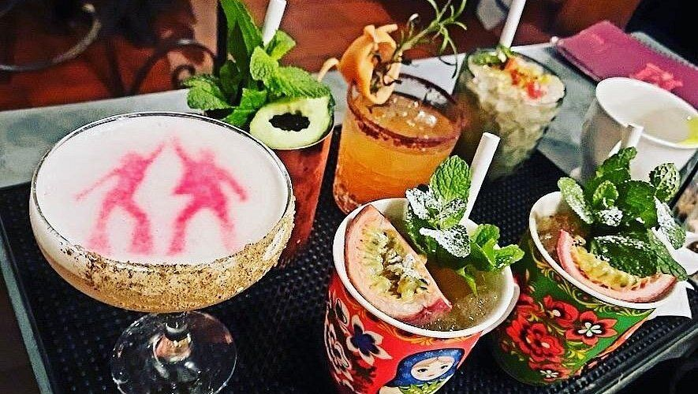
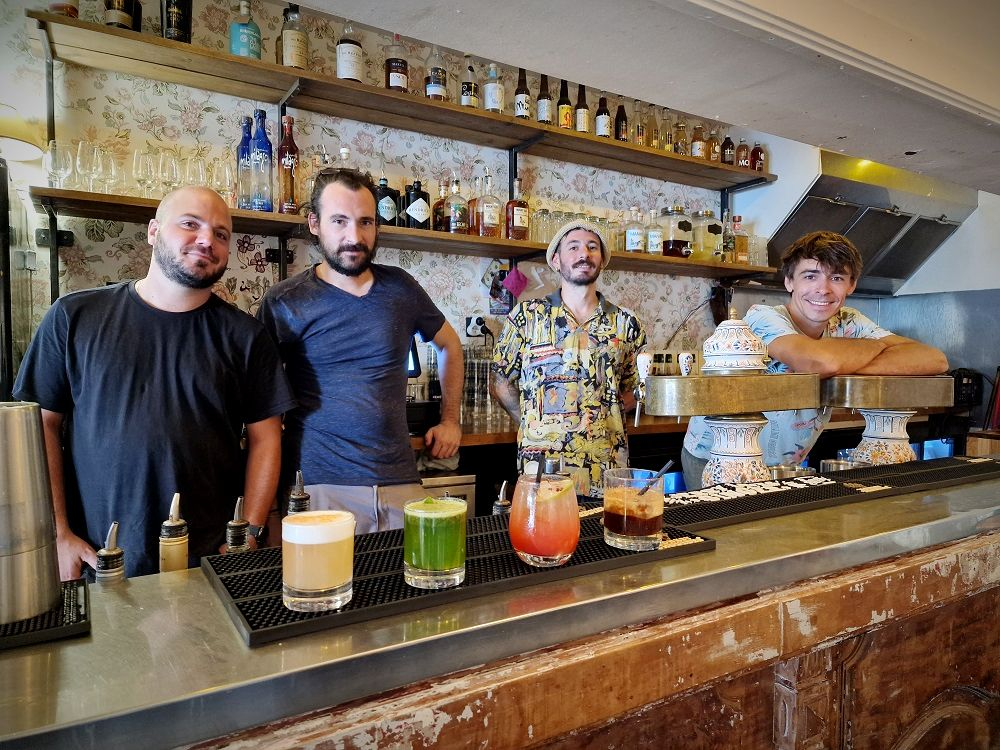
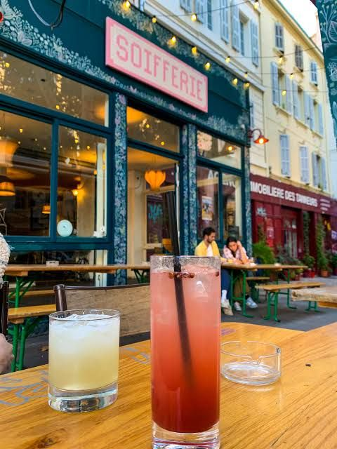
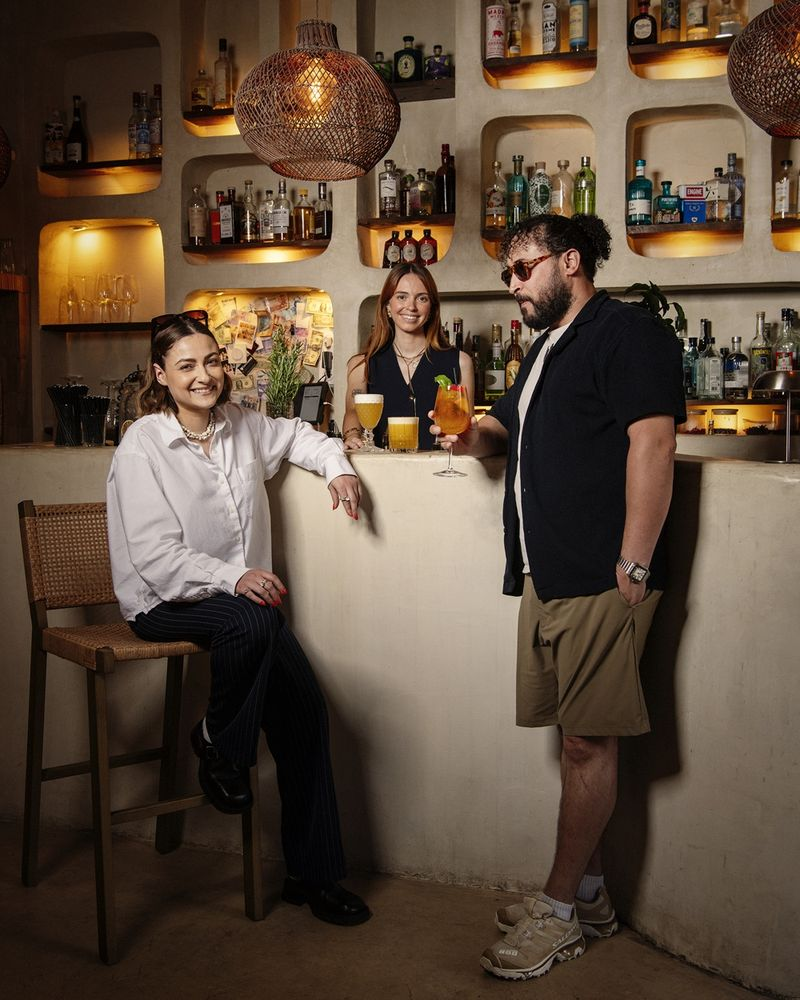
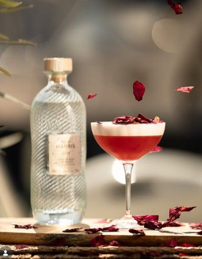

Le quartier a toujours eu ses comptoirs. Depuis quelques années, une nouvelle génération de bars
à cocktails s’y est installée : sirops faits maison, fruits pressés le jour même, cartes qui
racontent quelque chose de ceux qui les composent. On en a choisi trois, à moins de dix minutes
à pied les uns des autres.
La règle est simple. On commence en bas du cours Julien, on finit vers La Plaine, et entre deux
verres, on marche. Les trois adresses sont présentées dans l’ordre de leur ouverture, qui est
aussi le plus court chemin de l’une à l’autre.
Étape 1/3Verre à Cruise
Étape 1/3 · Bas du cours Julien
Verre à Cruise
Jade et Sami el-Richani sont libanais. Avant Marseille, il y a eu des années de nuit :
les bars et les clubs pendant leurs études, quelques grandes adresses de la vie nocturne
libanaise, puis Dubaï. Un jour, le couple décide d’ouvrir son propre lieu en Europe. Il
voyage, compare, et choisit Marseille. Verre à Cruise ouvre en 2021, en bas du cours Julien.
Le nom joue sur trois tableaux : le verre, évidemment ; Veracruz, la ville
mexicaine, clin d’œil aux Libanais qu’on croise aux quatre coins du monde ; et Tom
Cruise, barman jongleur dans le film Cocktail, en 1988.


Sami et Jade el-Richani · Le plateau du soir
La carte compte une trentaine de cocktails, dont une vingtaine de créations maison. Jus et
sirops sont faits sur place, et les épices circulent librement : coriandre, thym,
piment fumé, anis, et même un trait de Picon. Le Monte Pistachio marie pistache, eau de
fleur d’oranger et rose. Les cocktails au mezcal sont les plus demandés, dont un servi dans
une boîte qui libère un nuage de fumée à l’ouverture.
À côté des verres, une cuisine libanaise en petites assiettes, à partager au fil de la
soirée : houmous, chou-fleur grillé, falafels, buns au zaatar, chawarma. C’est toute
l’idée du lieu : recevoir comme on reçoit chez soi, à la libanaise.
↓ 385 m · 5 min à pied
On longe le cours Julien sur toute sa longueur, puis quelques mètres de ruelles mènent
à la place Paul-Cézanne.
Étape 2/3 · Place Paul-Cézanne
La Soifferie
La Soifferie ouvre à l’été 2021 sur la place Paul-Cézanne. Derrière le comptoir :
Antoine, César et Loïc, passés auparavant par la Brasserie Communale, et Flavie à la
mixologie.
Ici, la nostalgie est assumée. Papiers peints rétro, meubles chinés en brocante, un décor
qui change avec les saisons : on a l’impression d’entrer chez une grand-mère qui
aurait très bon goût en matière de gin.


L’équipe au comptoir · En terrasse, place Paul-Cézanne
Justement : les cocktails signature portent les prénoms des grands-mères de l’équipe.
Janine mêle gin et basilic frais, acheté chaque jour ; Yvonne mise sur la menthe
fraîche. La maison revendique une ligne simple, pas de snobisme, une ambiance de village.
Et quand il fait beau, tout se passe dehors : la terrasse peut accueillir une centaine
de personnes, avec des bières locales pour qui ne boit pas de cocktail.
↓ 329 m · 4 min à pied
Cap à l’est, vers La Plaine. Quelques minutes de ruelles, et on arrive rue des
Trois-Frères-Barthélémy.
Étape 3/3 · Rue des Trois-Frères-Barthélémy
Labo N°Heure
Dernière étape, et plus jeune adresse de la tournée : Labo N°Heure a ouvert en avril
2024. Marine et Zak y ont concrétisé un rêve commun, ouvrir leur bar, avec Lison dans
l’équipe.
Le lieu se veut un cocon méditerranéen : fauteuils en rotin, matières naturelles, une
placette au soleil. Un refuge, pensé pour qu’on s’y sente chez soi.


Zak, Marine et l’équipe · Le Cosmic Girl
Le nom dit la méthode. Au labo, on ne travaille qu’avec des produits frais, sans sirop
industriel. Les cocktails sont numérotés, comme des formules, et la carte compte une
quinzaine de mocktails maison, de quoi finir la tournée sans faiblir.
Curiosité de la maison : une carte d’anisés du monde. Pastis artisanaux, ouzo, raki…
Une façon de rappeler qu’on est à Marseille, et que la Méditerranée a plus d’une rive.
Fin de tournée
Trois bars, 710 mètres, trois façons de recevoir
Le quartier compte bien d’autres comptoirs. La carte du site les recense, et le Mag continuera
la tournée.
Où boire les meilleurs cocktails au Cours Julien ?
Trois adresses à moins de dix minutes à pied : Verre à Cruise (11, cours Julien), La Soifferie (8, place Paul-Cézanne) et Labo N°Heure (49A, rue des Trois-Frères-Barthélémy), à Marseille 6e.
Où boire un cocktail sans alcool au Cours Julien ?
Labo N°Heure propose une quinzaine de mocktails maison, préparés uniquement avec des produits frais.
Quel bar à cocktails pour manger au Cours Julien ?
Verre à Cruise sert, en plus de ses cocktails, une cuisine libanaise en petites assiettes à partager : houmous, falafels, buns au zaatar, chawarma.
Combien de temps faut-il pour faire la tournée à pied ?
Environ 10 minutes de marche au total : 385 m entre Verre à Cruise et La Soifferie, puis 329 m jusqu’à Labo N°Heure.
Pour aller plus loin
Verre à Cruise, deux Libanais à Marseille et un bar à cocktails
Joséphine Hobeika — L’Orient-Le Jour, 16 août 2024.